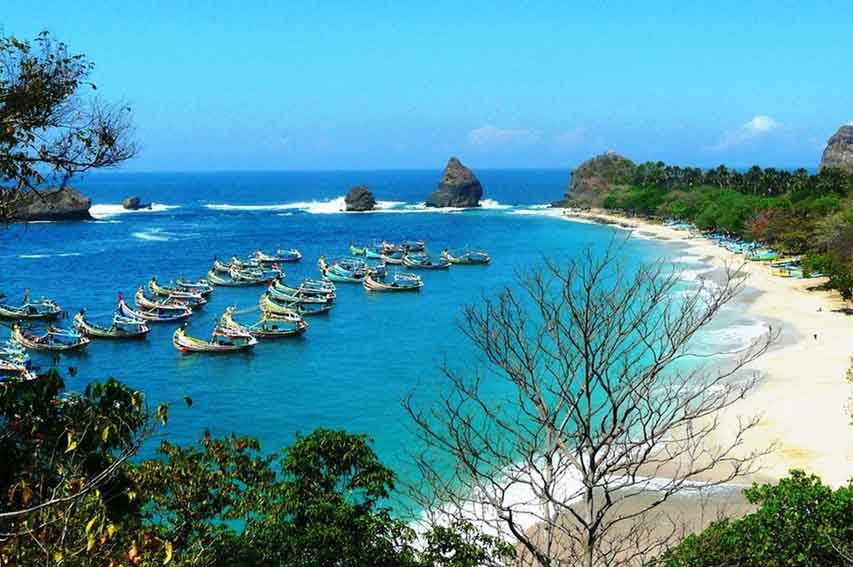
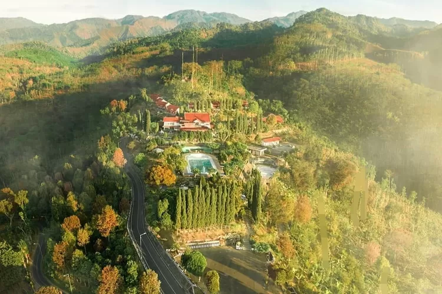
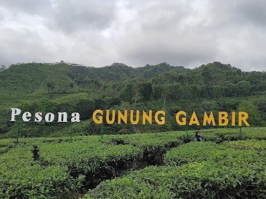

Pantai Papuma
Pantai eksotis dengan batu karang unik dan pasir putih yang memukau. Nikmati pemandangan laut yang indah dan pantai yang menyenangkan.
Lihat Detail

Agrowisata Rembangan
Wisata perkebunan dengan pemandangan alam pegunungan yang sejuk. Rasakan kesejukan udara pegunungan dan nikmati hasil perkebunan.
Lihat Detail

Taman Botani
Taman botani yang asri dengan berbagai koleksi tanaman. Tempat yang sempurna untuk bersantai dan menikmati keindahan alam.
Lihat Detail